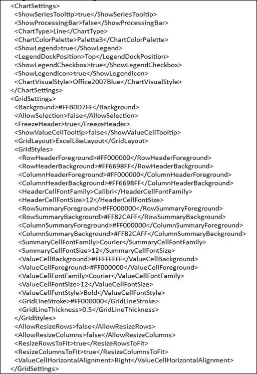

This feature enables the user to save additional settings along the OLAP information in an OlapReport and load them whenever required.
The following are the appearance settings that a user can save and load during the runtime in an OlapChart and OlapGrid.
OlapChart:
· Appearance
· Legend position
· Series color types
· Skin for chart
OlapGrid:
· Freeze headers
· Show Tooltip
· Header and Value cell settings
· Appearance
Use Case Scenarios
The user can maintain the Chart and/or the Grid appearance settings with its OLAP data through an OlapReport.
The following image shows a serialized Chart and Grid appearance settings in an XML format:

Figure 20 Serialized XML File
Properties
Table 4: Properties Table
|
Property |
Description |
Type |
Data Type |
Reference links |
|
ChartSettings |
Gets or sets the chart appearance settings |
CLR |
ChartApperanceSettings |
- |
|
GridSettings |
Gets or sets the Grid appearance settings |
CLR |
GridAppearanceSettings |
- |
Sample Link
The user can find samples in the following locations:
For OlapChart
SystemDrive\Users\<user_name>\AppData\Local\Syncfusion\EssentialStudio\<Version_number>\BI\Silverlight\OlapChart.SL\Serialization
For OlapGrid
SystemDrive\Users\<user_name>\AppData\Local\Syncfusion\EssentialStudio\<Version_number>\BI\Silverlight\OlapGrid.SL\Serialization
 Load and Save
report
Load and Save
report